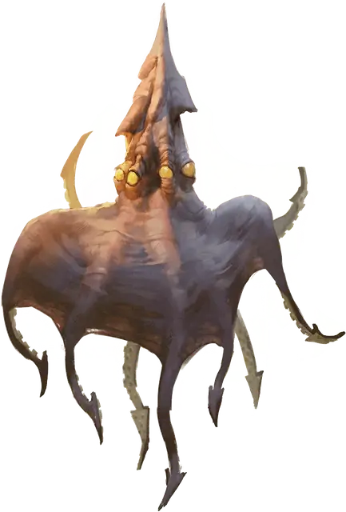

Тёмная мантия
Darkmantle
Маленький Монстр, без мировоззрения

Класс Доспеха 11
Хиты 22 (5к6 + 5)
Скорость 10 футов, летая 30 футов
| мод | спас | ||
|---|---|---|---|
| СИЛ | 16 | +3 | +3 |
| ЛОВ | 12 | +1 | +1 |
| ТЕЛ | 13 | +1 | +1 |
| мод | спас | ||
|---|---|---|---|
| ИНТ | 2 | −4 | −4 |
| МДР | 10 | +0 | +0 |
| ХАР | 5 | −3 | −3 |
Навыки Скрытность +3
Чувства слепое зрение 60 футов, пассивное Восприятие 10
Опасность 1/2 (100 опыта)
Бонус мастерства +2
Среда обитания Подземье
Особенности
Эхолокация. Тёмная мантия не может использовать слепое зрение, будучи оглохшей.
Обманчивая внешность. Пока тёмная мантия остается без движения, она неотличима от пещерного образования, такого как сталактит или сталагмит.
Действия
Сдавливание. Рукопашная атака оружием: +5 к попаданию, досягаемость 5 футов, одно существо. Попадание: Дробящий урон 6 (1к6 + 3), и тёмная мантия охватывает цель. Если размер цели не больше Среднего, и тёмная мантия совершала бросок атаки с преимуществом, она охватывает голову цели, и цель становится дополнительно ослепленной и не может дышать, пока тёмная мантия охватывает её.
Охватывая цель, тёмная мантия может совершать атаки только по ней, но зато броски атаки совершает с преимуществом. Скорость темной мантии становится равной 0, она не получает бонусов к скорости, и перемещается вместе с целью.
Любое существо может оторвать темную мантию, совершив действием успешную проверку Силы Сл 13. В свой ход тёмная мантия может сама оторваться от цели, использовав 5 футов перемещения.
Аура тьмы (1/день). От темной мантии исходит магическая тьма с радиусом 15 футов, перемещающаяся вместе с ней, и огибающая углы. Тьма существует, пока тёмная мантия поддерживает концентрацию, вплоть до 10 минут (как при концентрации на заклинании). Тёмное зрение не проникает через эту тьму, и никакой естественный свет не может её разогнать. Если часть этой тьмы пересечется со светом, созданным заклинанием с уровнем не больше 2-го, заклинание, создавшее свет, рассеивается.
Описание
«НАПОМНИТЕ МНЕ, ЗАЧЕМ МЫ ВООБЩЕ ВЗЯЛИСЬ ЗА ЭТО ЗАДАНИЕ?»
— ВОИН ЭТЕЛЬРЕД, ПОСЛЕ ПЕРВОГО СТОЛКНОВЕНИЯ С ТЁМНЫМИ МАНТИЯМИ
Тёмная мантия цепляется к потолкам пещер, оставаясь совершенно неподвижной, пока под ней не пройдет жертва. Издалека она может походить на сталактит или кусок камня. Потом она падает на добычу, раскрываясь и окружая себя магической тьмой, чтобы заглотить и смять жертву.
Темные мантии встречаются по всему Подземью, но в Царстве Теней они обитают не менее часто. Процветая в царстве мрака, они заняли экологическую нишу летучих мышей Материального Плана. Разумные существа Царства Теней иногда воспитывают темных мантий как компаньонов или стражей.